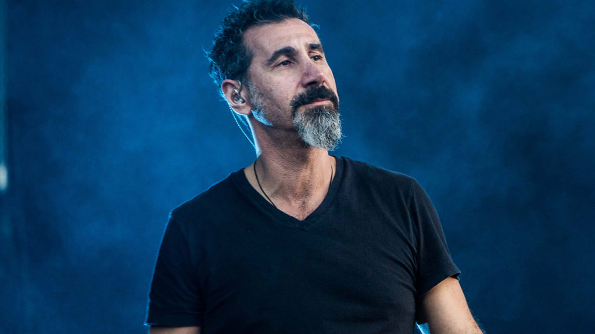
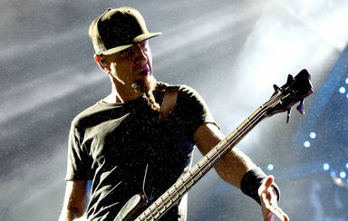
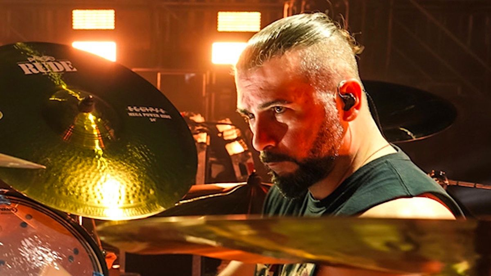

SYSTEM OF A DOWN - PROTECT THE LAND (COVER BY VICKY PSARAKIS)
System of a Down (also known abbreviated as SOAD or just simply as System) is an Armenian-American heavy metal band formed in Glendale, California, in 1994. It currently consists of members Serj Tankian (lead vocals, keyboards), Daron Malakian (guitar, vocals), Shavo Odadjian (bass, backing vocals), and John Dolmayan (drums), who replaced original drummer Andy Khachaturian in 1997. The band achieved commercial success with the release of five studio albums, three of which debuted at number one on the US Billboard 200. System of a Down has been nominated for four Grammy Awards and their song "B.Y.O.B." won a Grammy Award for Best Hard Rock Performance in 2006. The band went on hiatus in 2006 and reunited in 2010, and they have continued to perform live occasionally since then. It has not released a studio album since Mezmerize and Hypnotize in 2005, but issued two new charity songs to benefit victims and support Armenian defenders in the 2020 Nagorno-Karabakh war ("Protect the Land" and "Genocidal Humanoidz").[2] The band has sold over 40 million records worldwide, while two of their singles "Aerials" and "Hypnotize" reached number one on Billboard's Alternative Songs chart.
SERJ TANKIAN
Serj Tankian (Armenian: Սերժ Թանկյան, [ˈsɛɾʒ tʰɑnˈkjɑn]; born August 21, 1967) is an Armenian-American musician, singer, songwriter, record producer, and political activist. He is best known as the lead vocalist, primary lyricist, keyboardist, and occasional rhythm guitarist of heavy metal band System of a Down, which was formed in 1994.
DARON MALAKIAN

Daron Vartan Malakian (born July 18, 1975) is an Armenian-American musician, singer, songwriter, and record producer. He is best known as the guitarist, songwriter and second vocalist of metal band System of a Down, and as the lead vocalist, lead guitarist, multi-instrumentalist, and songwriter of Scars on Broadway. Malakian is known for his distinctive playing and is ranked 14th in Loudwire's list of Top 50 Hard Rock + Metal Guitarists of All Time and number 11 in MusicRadar's poll, The 20 Greatest Metal Guitarists Ever. He is placed 30th in Guitar World's list of The 100 Greatest Heavy Metal Guitarists of All Time.
SHAVO ODADJIAN
Shavarsh "Shavo" Odadjian (Armenian: Շավարշ "Շավո" Օդաջյան; born April 22, 1974) is an Armenian-American musician and songwriter. He is best known as the bassist, backing vocalist, and occasional songwriter of heavy metal band System of a Down. During the band's hiatus from 2006 to 2010, Odadjian collaborated with Wu-Tang Clan founder RZA on a project called AcHoZeN, which contributed a number of songs to the motion picture Babylon A.D. A compilation album was released in 2015. Odadjian is also credited with the musical scoring of the film, alongside The Rza and Hans Zimmer.
JOHN DOLMAYAN
John Dolmayan (Armenian: Ջոն Դոլմայան; born July 15, 1973) is an Armenian-American drummer and songwriter. He is best known as the drummer of System of a Down. Dolmayan is also the drummer for the band Indicator and former drummer for Scars on Broadway. Dolmayan ranked number 33 on Loudwire list of Top 66 Hard Rock + Metal Drummers of All Time.